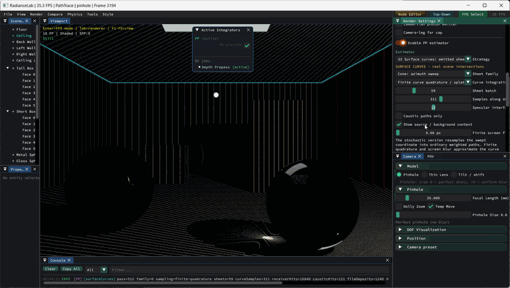

A geometric construction becomes more persuasive when it predicts something on a real receiver. These experiments keep the scenes small enough to inspect the measure, support and reference result directly. Their purpose is to turn the next research question into a reproducible image, without pretending that one isolated mode extends every renderer in the application.
Start with a native receiver experiment
The additive native laboratories now include sphere connections, a sharp boundary derivative and a coherent receiver render. Each evaluates its actual transport or field model; none is a diagram laid over an unrelated image. Open View → Optics & primitive laboratory, then choose the corresponding tab. Sphere-Connection.bat, Sharp-Boundary-Derivative.bat and Coherent-Receivers.bat open isolated sessions directly at those experiments.

The sphere-connection renderer samples both radii and a residual azimuth, includes visibility and transmittance on both legs, and deposits radiance into the actual sensor film. An independent camera-ray quadrature checks the same single-scattering scene. The normalized radial gates isolate one family of connections; they are not a claim that an ordinary TOF sensor separately measures both segment lengths.


The sharp boundary experiment exposes the moving source vector, signed-only and dim-original overlays, and a finite-difference comparison. The coherent receiver experiment exposes relative phase, wavelength, reference amplitude and coherent/incoherent addition. Its surfaces are non-perturbing field probes, not a wave-material solver. Those deliberately small scopes make the images independently testable.
Two different reasons to see stripes

The surface-splat observation is a useful starting point. In this capture, PP33 is drawing a finite batch of cone sheets with finite quadrature along each sheet. Each sheet meets the receiver along a curve. Reusing a structured batch makes those curves visible across the scene; sparse coverage and film sampling can turn them into a striped image.
These are sampling stripes. PP33 transports radiance contributions; it does not retain a relative optical phase. Two positive contributions simply add. Their resemblance to interference fringes is a reason to investigate a wave extension, not evidence that this image already records a hologram.
Coherent interference changes the quantity being accumulated. For complex fields from two sources and a reference field,
The cross terms can reinforce or cancel while source powers remain fixed. Changing relative phase moves genuine fringes; increasing the number of samples should preserve their converged location. Sampling stripes should instead change or fill in as the sample population changes. This gives a practical diagnostic that a similar-looking screenshot cannot provide.
What could connect surface primitives to holography?
A receiver restriction is useful to both approaches: it identifies where a field is evaluated. The harder part is carrying the right field. A coherent extension needs complex amplitude, wavelength, propagation phase, a declared source-coherence relationship and material/visibility assumptions. A reference field then records interference intensity. Merely painting the existing positive photon splats into a texture omits those cross terms.
The hologram record/replay experiment already demonstrates intensity-only recording and reconstruction for a controlled layered field. The projector-imaging pipeline uses modulated-light measurements for depth. They answer different questions: one transports a scalar coherent field; the other demodulates an envelope carried by geometric rays. Both are relevant to a future surface-field mode.
Zero-width support does not mean zero pixel area
An ideal emitter edge extruded along a fixed light direction produces a plane. Its transverse intersection with a receiver produces a line or curve. That geometric support has no chosen blur width. An image still integrates over finite pixel footprints, so the curve appears as finite pixel coverage.
Several other widths in the application represent different operations:
- Smooth emitter edge: the older footprint experiment replaces a step by a smooth kernel. Its derivative is a finite boundary band by definition.
- Finite displacement: a difference between two translated footprints contains two narrow regions. Dividing by displacement approximates a derivative; shrinking displacement changes the approximation.
- PP33 screen filter: finite curve quadrature can optionally spread a film deposit with a Gaussian. The stochastic path mode has no surface gathering radius. Even at zero optional blur it still writes into a pixel filter.
- Pixel integration: finite sensor area remains necessary when a sharp derivative is a distribution supported on a curve. It is independent of an artistic or density-estimation blur setting.
The number of signed boundaries also depends on motion. Translation of an axis-aligned quad parallel to one edge activates its opposite pair. A general in-plane translation can give nonzero normal velocity to all four edges. Translation along the extrusion direction leaves that ideal infinite, uniform footprint unchanged. For a general radiometric scene, geometric falloff, emission and changed visibility can contribute additional derivatives.
Cone and plane: the existing scene comparison
PP33 already includes Cone + plane: balance MIS. The two families trace different correlated sweeps through real receiver and glass geometry, with one common total budget. Their marginal emitted-path PDFs are equal in this implementation, so balance weights reduce to allocation fractions. A visually different line and ring are not automatically different common-measure PDFs.
The retained 54-render comparison found no efficiency gain over the single families in its fixtures. This is useful negative evidence: changing sweep orientation can hedge structured error, but it does not make the initial light-to-glass connection easier to sample. The technical document retains the images, variance/cost measurements and scope.
Keep implementation status visible
The implementation ledger separates scene renderers, computed support/measure experiments and open extensions. It also records why an older running executable could hide the already implemented PP33 pair. Existing schematics remain alongside the scene evidence: one exposes the construction, the other checks what that construction predicts on a receiver.